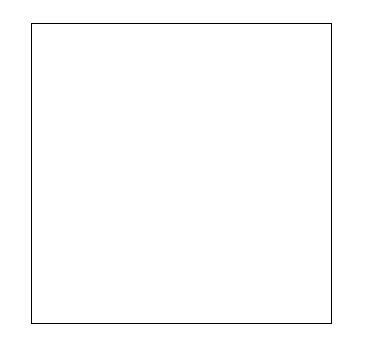
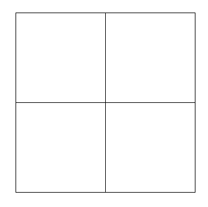
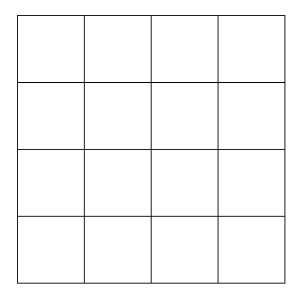
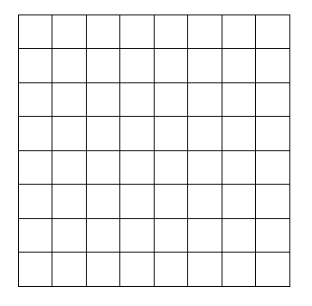

8.6 EXERCICIS AMB LA LLIBRERIA GRÀFICA WINDOW ADD-ON
Exercici 1
Quadrats niats. Escriu un programa que donada la mida del costat d'un quadrat inicial, i el nombre n de subdivisions recursives, dibuixi els 4n quadrats resultants de dividir de manera recursiva el quadrat inicial i els quadrats que es generen. A continuació teniu exemples de com s'hauria de veure amb valors de n = 0..3.
 n = 0
 n = 1
 n = 2
 n = 3
Exercici 2
Arbre binari recursiu. Escriu un programa que permeti dibuixar arbres binaris recursius donant la mida de la branca inicial i una reducció de mida de la branca per cada pas. Els paràmetres de la forma del arbre com són l’angle de les branques i el la longitud mínima d’aquestes es deixen triar. La solució proposada usa un angle de desviació de 20 graus i una mida mínima de branca de 5 unitats. Seguidament teniu un exemple amb mida de branca inicial 100 i reducció 20 seria el següent:
Fractals
A continuació trobareu 3 exercicis sobre figures fractals. Podeu usar com a referència aquest lloc web. Aquí trobareu tota la informació necessària per completar els exercicis.
Exercici 3
Arbre binari recursiu. Escriu un programa que permeti dibuixar arbres binaris recursius donant la mida de la branca inicial i una reducció de mida de la branca per cada pas. Els paràmetres de la forma del arbre com són l’angle de les branques i el la longitud mínima d’aquestes es deixen triar. La solució proposada usa un angle de desviació de 20 graus i una mida mínima de branca de 5 unitats. Seguidament teniu un exemple amb mida de branca inicial 100 i reducció 20 seria el següent:
Exercici 4
Corba de Peano. Escriu un programa que permeti dibuixar la corba de Peano donant l’ordre d’aquesta per teclat. S’ha de fer utilitzant el concepte de recursivitat. No us estranyeu si veieu que la figura queda completament deformada amb ordres majors que 4. Això és degut als errors d’arrodoniment del format del tipus basic float que la llibreria de la finestra usa.
Exercici 5
Corba de Hilbert. Escriu un programa que permeti dibuixar la corba de Hilbert d’ordre n donada la n per teclat. S’ha de fer utilitzant el concepte de recursivitat.